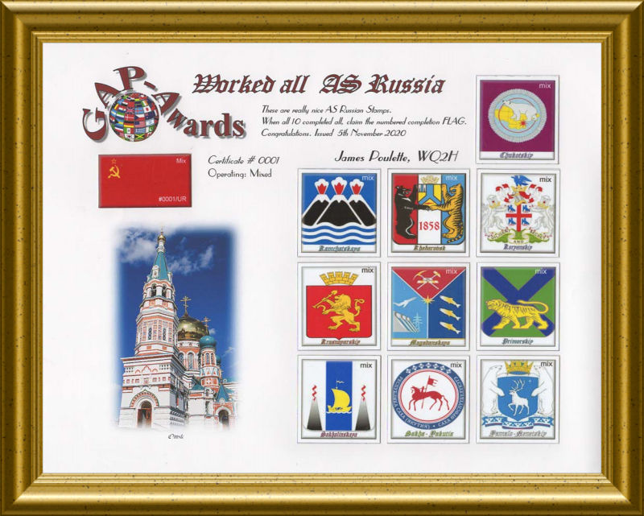

| GAP Awards Paper Certificates Family Tree |
| Index | Grid Index |
| This is the
Asiatic Russian PINNACLE Award, DUA0 (Digital Worked all UA0) You supply the frame! |
|  |
| You can claim the fine DUA0 PINNACLE award after confirming 18 of the 29 AS Russia regions on the Grid Locator table. After confirming the required islands, 1 from 6 different Region Groups, as per the Grid Locator table PINNACLE list, you can then claim the coveted Russian Federation FLAG which is numbered and marked UA0 for the Asian regions worked. |